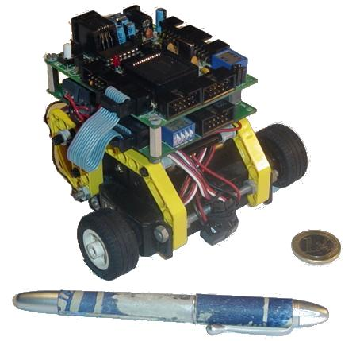
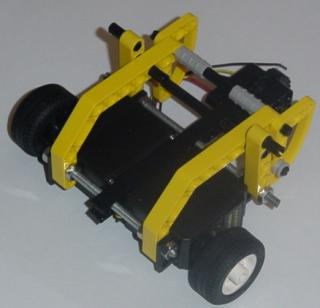
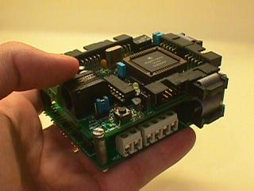
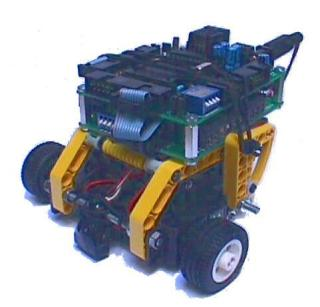

| MICROBOT TRITT |
| [caracteristicas] | [Autores] | [Licencia] | [Mecánica] | [Electrónica] | [Software] | [Historia] | [Download] | [Links] | [Noticias] |

Tritt es un robot muy sencillo pensado para aquellos que se quieren iniciar en el mundo de la microbótica. La estructura mecánica está realizada con piezas de Lego y como motores se utilizan los servos Futaba 3003 , trucados para poder funcionar como motores de corriente continua normales.
Se trata de uno de los robots más básicos y sencillos de construir. Con los conocimientos adquiridos en su construcción, el usuario puede ampliar la estructura, modificarla o construir una nueva. En todos los talleres realizados con Tritt nos hemos sorprendido al ver el aspecto final de los robots. Cada asistente lo personaliza a su manera.
Para su control se utiliza la tarjeta CT6811 , basada en el microcontrolador 68hc11 de Motorola y la tarjeta CT293+ para el control de los motores y los sensores de infrarrojos. Sin embargo, se puede utilizar cualquier otra electrónica o microcontrolador, como por ejemplos los PICs.
La aplicación típica es el robot seguidor de línea que permite a sus diseñadores adquirir los conocimientos básicos para poder realizar robots más complejos. Aquí puedes ver un vídeo
Tritt es un robot abierto por lo que están disponibles los esquemas y la documentación de su estructura mecánica y electrónica. Se conceden permisos para copiar, modificar y distribuir las modificaciones, siempre que se mantenga esta misma nota.
La estructura mecánica está compuesta por piezas de lego y dos servos Futaba 3003 trucados. Recibe el nombre de estructura ALF (Adaptación Lego-Futaba) y ha sido diseñada por Andrés Prieto-Moreno Torres.
Los servos se unen mediante dos varillas roscadas de 4mm de diámetro y 7.5 y 9.5 cm de longitud.

Tritt utiliza las tarjetas CT6811 y CT293+ que se unen formando una torre, colocándose encima de la estructura ALF.

El software que se utiliza es el mismo que se usa para la tarjeta CT6811, que permite cargar programas en la ram del 6811, así como grabar en la eeprom. Dentro de las CTTOOLS es muy útil el programa CT294 que permite controlar a Tritt desde el PC y leer los sensores de infrarrojos.
Todo el software está bajo licencia GPL, por lo que están disponibles las fuentes.
El nombre de Tritt se tomó la novela de ciencia ficción "Los propios dioses" de Isaac Asimov. Es uno de los protagonistas que forman una tríada, junto con Dua y Odeen. Tritt es un Paternal, Dua una Emocional y Odeen un Racional.
La historia de Tritt está relacionada con los talleres de robótica impartidos. Nació con el I Taller de Microbótica de la UPM, organizado por la Rama de estudiantes del IEEE, cuando los autores eran conocidos bajo el nombre de Grupo J&J. Las fechas más importantes fueron:

A partir del II Taller de Robótica celebrado en la UPM la estructura de Tritt fue modificada (estructura ALF II, que es la que tiene actualmente), adaptándose a las nuevas piezas de Lego disponible.
| DOCUMENTACIÓN |
| faq-tritt.pdf (59KB) | FAQ de Tritt. Respuesta a las preguntas más frecuentes |
| faq-tritt.tgz (8KB) | FAQ de Tritt. Fichero fuente para Lyx |
| ALF-doc.pdf(145KB) | Manual básico de construcción de Tritt. Sólo la estructura ALF |
| ALF-doc.tgz (26KB) | Fuentes del documento ALF-doc para Lyx. Figuras para Xfig |
| taller-tritt.pdf(390KB) | Documentación empleada en los talleres |
| taller-tritt.sxw (361KB) | Fuentes del documento taller-tritt para OpenOffice |
| taller-tritt.tgz(12KB) | Fuentes de los dibujos del documento taller-tritt. Para Xfig |
| microbot.pdf (409KB) | Construcción de Tritt. Información sobre los Futaba, Trucado de los servos y estructura ALF I |
| microbot-tritt.tgz(865KB) | Fuentes del documento microbot, para Lyx. (Incluye todas las fotos) |
| Manual-tritt.pdf(847KB) | Manual de construcción de Tritt de Microbótica [1]. |
| RECORRIDOS DE PRUEBA |
| circuito-tritt-1.pdf(8KB) | Circuito de pruebas 1 para que Tritt lo recorra. Imprimir en papel A4 con impresora Láser |
| circuito-tritt-1.fig(0'6KB) | Circuito de pruebas 1. Fuentes para Xfig |
| circuito-tritt-2.pdf(1KB) | Circuito de pruebas 2 para que Tritt lo recorra. Imprimir en papel A4 con impresora Láser |
| circuito-tritt-2.fig(0'6KB) | Circuito de pruebas 2. Fuentes para Xfig |
| EJEMPLOS PARA TRITT |
| tritt-ram.asm | tritt-ram.s19 | Programa para que Tritt siga una línea negra. Ejemplo para cargar en la RAM interna |
| tritt-a1.asm | tritt-a1.s19 | Idem, pero para la memoria eeprom de un A1 |
| tritt-E2.asm | tritt-E2.s19 | Idem, para la memoria eeprom de un E2 |
| MULTIMEDIA |
| video-tritt.mpg (1.6MB) | Vídeo de Tritt siguiendo este recorrido |
| tritt-01.jpg (24KB) | Foto de Tritt de frente |
| tritt-02.jpg(42KB) | Tamaño de tritt en relación con una mano |
| tritt-03.jpg (122KB) | Un Tritt "tuneado" |
| tritt-04.jpg(114KB) | Un Tritt "con pluma" |
| tritt-05.jpg (62KB) | Tritt en el Taller en la Universidad de Deusto, en Noviembre de 1998 |
| tritt-06.jpg(44KB) | El batallón de Tritts del I Taller en la UPM, Marzo 1997 |
| tritt-07.jpg (22KB) | Concurso "el mogollón". II Taller en la UPM, Marzo 98 |
| tritt-08.jpg(43KB) | Consurso de la UPSAM, Marzo, 2001 |
| tritt-09.jpg (62KB) | Tritts en Formación |
¿Quieres participar? A continuación proponemos una serie de cosas que quedan por hacer. Si has realizado alguna de ellas y quieres que te la publiquemos solo tienes que mandarnos un correo.
[1] Las letras del fichero Manual-tritt.pdf se ven "borrosas" con el Acrobat Reader, pero el documento se imprime correctamente. Con otros visualizadores, como el GV o XPDF se ve correctamente. Desgraciadamente las fuentes de este documento se han perdido, y solo disponemos del fichero en pdf.
{kind=link}
{kind=link}
{kind=link}
{kind=link}
{kind=link}
{kind=link}
{kind=link}
{kind=link}
{kind=link}